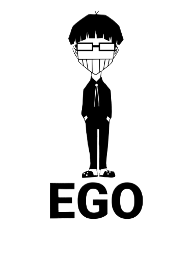

Contacto
¿Qué es Blue Lock?
Jugadores
Equipos
Escenarios
Apuestas
Mostrar Filtros
Ordenar por: Predeterminado
Ranking inicial (↑)
Ranking actual (↑)
Ranking inicial: Todos
Top 100
200-300
Descalificados
Ranking actual: Todos
Top 10
Top 50
Descalificados
White Card
